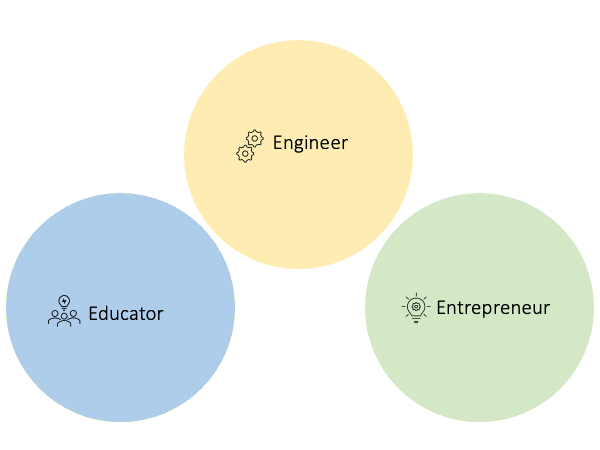

My journey at the University of Washington began in 2012, when I arrived in Seattle from Dubai to study Cell and Molecular Biology. I was seventeen years old, in a different country and masked nervousness with excitement and a sense of adventure. Almost a decade later, I am an engineer and still abuzz with excitement and a sense of adventure. However, my nervousness has been replaced by an innate confidence and trust in my abilities that has been cultivated through a vibrant mosaic of a Husky experience.
My time at the UW has solidified my values and the foundations of my identities. It has provided me with countless opportunities to learn, fail, grow and reflect on how can I contribute to my communities and the world. At the end of my UW experience, I will not only possess an invaluable set of professional skills, but more importantly, will have a trove of incredible relationships for the rest of my life. The University of Washington has shaped me into the person I am now and I am grateful to have had the opportunity to be here and partake in all that it has to offer.
